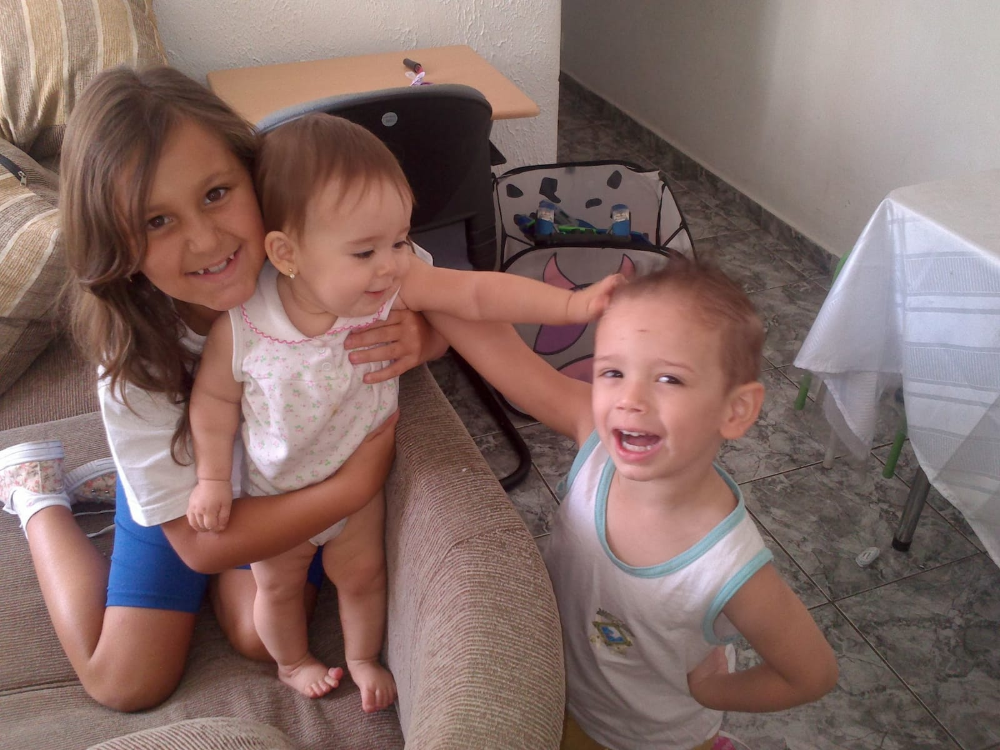
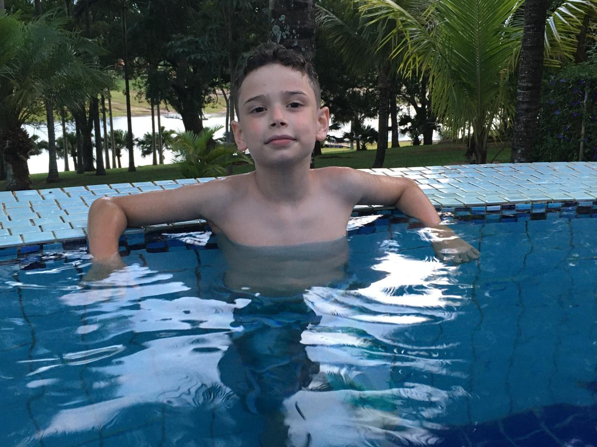

// portfólio pessoal
// portfólio pessoal
Apresentação pessoal
- Nome: Jorge Del Carmen Concha Llanos Neto
- Nascimento: 04/01/2011
- Onde moro: Jardim São Luís



Curiosidades
- Tenho 2 cachorros e 2 gatos
- Eu já tive cobras como pet
- Eu já fui careca
Meus jogos favoritos
-
Red Dead Redemption 2
-
Minecraft
-
God of War